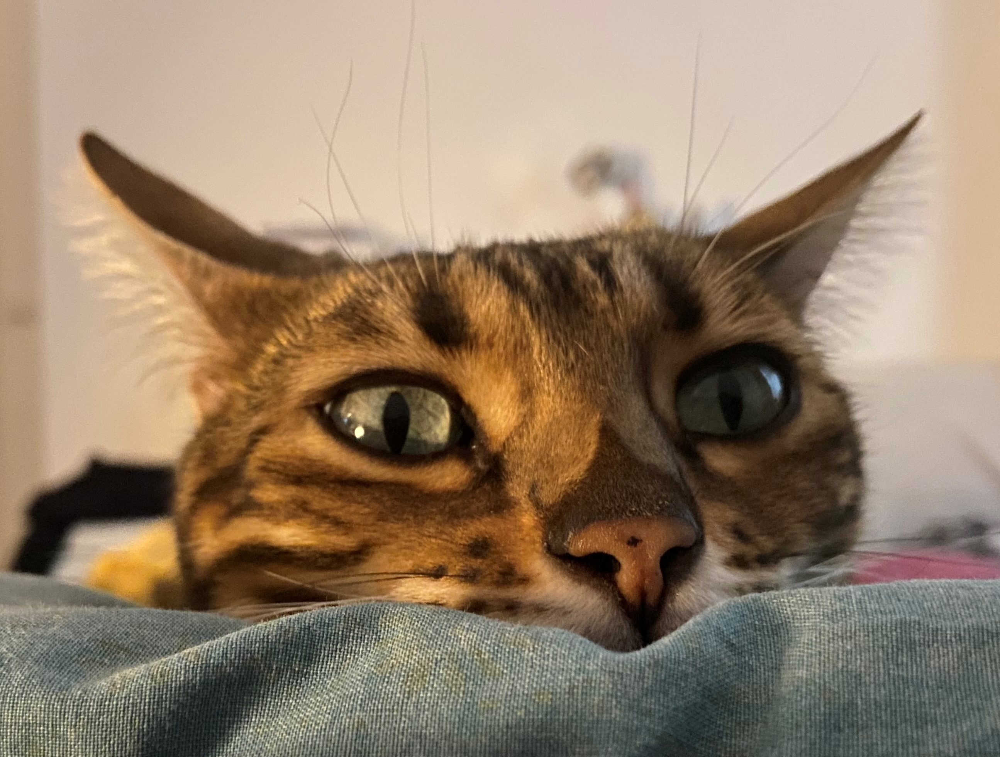

| Description | Photo |
|---|---|
| Le chat face écrasée | |
| Le chat blasé | |
| Le chat à la langue anormalement longue | |
| Le chat qui se cache derrère ton bras | |
| BONJOUR |  |
| Le chat qui se met au vert | |
| Le chat qui te hurle dessus | |
| Le chat K.O | |
| Le chat qui fait son shopping | |
| Le bébé chat | |